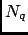

Next: Output
Up: Elastic Incoherent Structure Factor
Previous: Theory and implementation
Contents
Parameters
Pressing the Elastic Incoherent Structure Factor button will pop up the dialog shown on figure 4.55
Figure 4.55:
The dialog from where the EISF analysis will be set up and run.
|
|
The following input fields controls the parameters for the EISF analysis:
- Trajectory file
Format: string
Default: traj_file where traj_file is the name of the loaded trajectory
Description: the value of this widget can not be changed. It just recalls for information purpose the name
of the trajectory file loaded for the analysis.
- Frame selection
Format: string
Default: 1:traj_length:1 where traj_length is the number of frames of the trajectory.
Description: this widget allows to select the trajectory frames that will be used for the analysis. This must
be a string of the form:
first:last:step
where first is an integer specifying the first frame number to consider, last is an integer specifying the last
frame number to consider and step is an integer specifying the step number between two frames.
For example,
- 2:10:3 will select the frames 2, 5 and 8.
- 1:5:1 will select the frames 1, 2, 3, 4 and 5.
- Q values (in nm-1)
Format: string
Default: 0:100:1.
Description: this widget allows to select the modulii of the q-vectors. This must
be a string of the form:
In this way, the intermediate scattering function will be calculated for discrete q defined as
where is the radius of the smallest q-shell, is the
distance between two consecutive q-shells and with m running from 0 to where is the
number of selected q-shells defined as
where is the
radius of the biggest q-shell.
For example,
- 0:10:1 will generate q-shells of radii 0, 1, 2, 3, 4, 5, 6, 7, 8, 9, 10.
- 3:12:2 will generate q-shells of radii 3, 5, 7, 9, 11.
- Q shell width (in nm-1)
Format: strictly positive float
Default: 1.0
Description: this widget allows to define the tolerance dq on the q-modulii. So, for each q-shell of
modulus q, nMOLDYN will accept a q-vector to belong to that shell if its modulus falls in the range
[q-dq/2,q+dq/2]. This parameter fix the q-resolution.
- Q vectors per shell
Format: strictly positive integer
Default: 50
Description: this widget allows to specify the number of q-vectors ,  to generate for each q-shell. Indeed,
when generating q-vectors, nMOLDYN will try to generate q-vectors for each q-shell in order to carry out the averages
of Eq. 4.151. For a given q-shell, if nMOLDYN could generate less q-vectors than , it will only use the
number of generated q-vectors instead of and if nMOLDYN could generate more q-vectors than , it will pick up
randomly q-vectors among the generated q-vectors. The higher this parameter is the smoother will be the computed
intermediate scattering function but at the cost of a slower analysis.
- Q vectors generator
Format: string equal to 3D isotropic, 2D isotropic or anisotropic
Default: 3D isotropic
Description: this option allows to specify how the q-vectors should be generated:
- 3D isotropic the q-vectors are generated randomly on concentric spheres.
- 2D isotropic the q-vectors are generated randomly on concentric rings in a given plane.
- anisotropic the q-vectors are generated randomly on one or several defined directions.
- Q vectors direction
Format: string
Default: no
Description: this widget allows to specify one or several preferential directions along which the q-vectors have to
be generated. Depening on the q-vectors generation type, the entered value will take different values:
- 3D isotropic the default value no must be used.
- 2D isotropic a string of the form
where
and
are respectively the x,y,z components of q-vector
q1 and q2, (q1,q2) defining the plane on which the q-vectors will be generated.
- anisotropic a string of the form
where
,
...are respectively the x,y,z components of q-vector
q1, q2 ..., the q-vector generation being performed along each defined direction.
- FFT window
Format: float in [0.0,100.0]
Default: 10.0
Description: this widget allows to define the width in percentage of the trajectory length of the Gaussian
function to be used in the smoothing procedure for the calculation of the coherent structure factor out of the intermediate
scattering function. See Appendix A for more details.
- Subset selection
Format: subset selection string
Default: all
Description: this widget allows the selection of a subset of the system for the analysis.
See Section 4.2.2.1 for more details.
- Deuteration selection
Format: deuteration selection string
Default: no
Description: this widget allows the selection of a subset hydrogen atoms that will take the atomic parameters
of deuterium. See Section 4.2.2.2 for more details.
- Weights
Format: string equal to equal, mass, coherent, incoherent or atomicNumber
Default: incoherent
Description: this widget allows the selection of the weighting scheme to apply on each atomic contribution
to the DISF. See Section 4.2.1 for more details.
- EISF output file
Format: string
Default: EISF_traj_file.nc where traj_file.nc is the name of the input trajectory
Description: this widget allows to enter the name of the NetCDF output file of the EISF analysis. A CDL
version of the NetCDF output file is also automatically created with EISF_traj_file.cdl name.
Next: Output
Up: Elastic Incoherent Structure Factor
Previous: Theory and implementation
Contents
pellegrini eric
2009-10-06